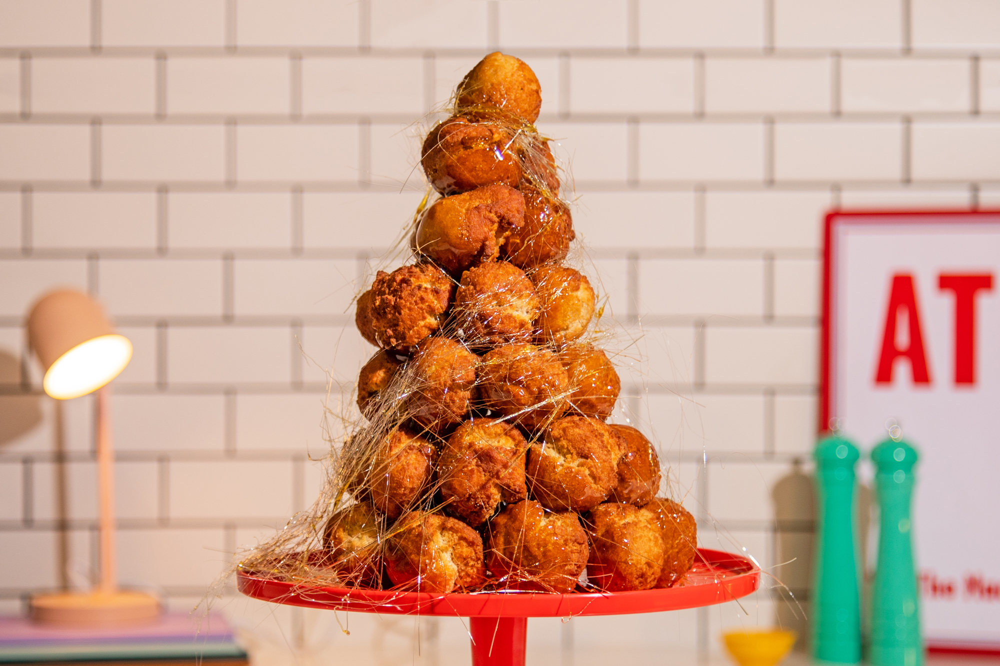

Croquembouche

A croquembouche or croque-en-bouche is a French dessert consisting of choux pastry puffs piled into a cone and bound with threads of caramel.
Following are the ingredients required to make one of the best croquembouche:
-
For Choux:
- 2 cups water
- 1 cup (16 tablespoons) unsalted butter
- 1 teaspoon Kosher salt
- 1 teaspoon granulated sugar
- 2 1/2 cups all-purpose flour
- 10 to 11 large eggs, at room temperature
-
For the Vanilla Pastry Cream:
- 4 large egg yolks, at room temperature
- 3 tablespoons cornstarch
- 1/4 teaspoon kosher salt
- 2 teaspoons pure vanilla extract
- 2 cups whole milk
- 1/2 cup granulated sugar
- 5 tablespoons unsalted butter
-
For the caramel:
- 3 cups granulated sugar
- 1/2 cup water
To prepare this delicious treat follow the instructions below:
- Heat oven to 425 degrees. To make the puffs: In a medium saucepan, melt butter in 1 1/2 cups water with salt and sugar. Remove pan from heat, and add flour. Return pan to heat and, using a wooden spoon, beat vigorously for 2 to 3 minutes. (A film should form on the bottom of the pan.) Cool slightly, and add 6 eggs, one at a time, beating vigorously.
- Make a glaze by beating the remaining egg with 1 teaspoon water, and set aside. Using a pastry bag fitted with a coupler and a 1/2-inch-wide plain tip, pipe out mounds that are 1 inch high and 3/4 inch in diameter on a parchment-lined baking sheet. Brush with egg glaze, and smooth the tops. Bake until puffed and golden, 20 to 25 minutes. Cool on racks. (The puffs can be made ahead and frozen until ready to assemble.)
- Make the pastry cream: In the bowl of an electric mixer fitted with the whisk attachment, beat egg yolks, gradually adding sugar, until mixture is thick and pale yellow. Beat in flour. Scald milk, and add in dribbles to egg mixture, reserving 1/2 cup. Place mixture in a clean pot over high heat, and stir vigorously until mixture boils and thickens. If it seems too thick to pipe, add reserved milk. Remove from heat. Using a hand whisk, beat butter into egg mixture, one tablespoon at a time.
- In a double boiler or heatproof bowl set over simmering water, melt chocolate and espresso together until smooth. Add chocolate mixture to the pastry cream; let cool completely. Just before assembling croquembouche, fill a pastry tube fitted with a 1/4-inch-wide tip with pastry cream, insert tip into puffs, and pipe in cream to fill.
- To make the caramel: In a medium saucepan, combine 2/3 cup water, sugar, and corn syrup, and bring to a boil over high heat. Do not stir. Cover pan, and boil until steam dissolves any crystals. Uncover, and boil 5 more minutes, or until syrup is amber in color. Remove from heat. Dip the bottom of each puff into the caramel, and arrange puffs in a pyramid.
- To make a spun-sugar web to wrap around the croquembouche: Cut the looped ends of a wire whisk with wire cutters, or use 2 forks held side by side, and dip the ends into caramel. Wave the caramel back and forth over the croquembouche, allowing the strands to fall in long, thin threads around it. Wrap any stray strands up and around the croquembouche. Serve.